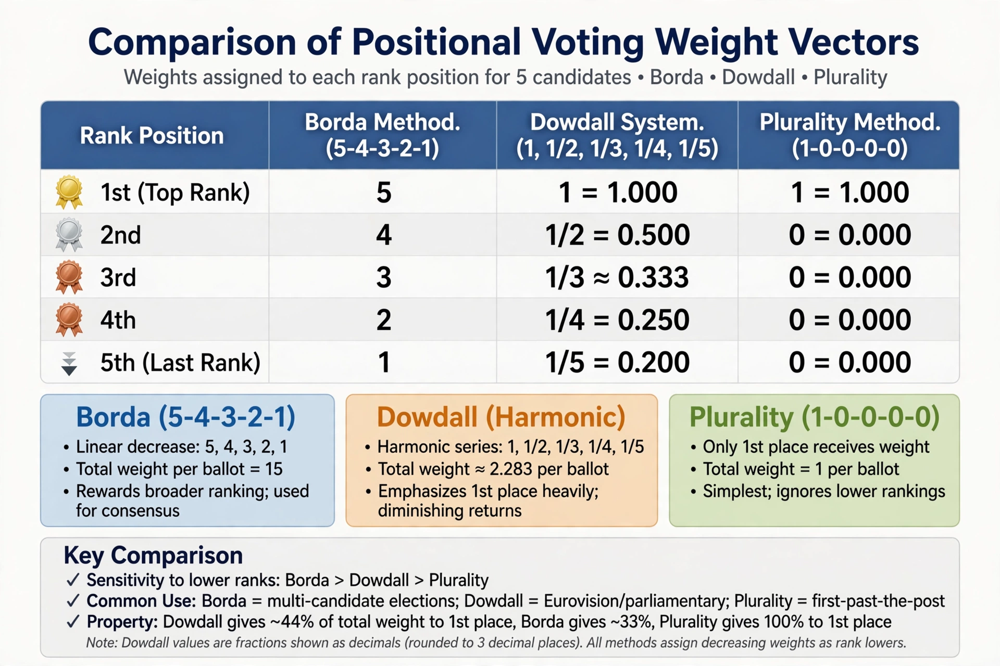

From Wikipedia, the free encyclopedia · "Positional voting system"
Positional voting is a class of ranked-choice electoral systems in which each option is given points according to the position in which the voter ranks it, and the option with the most points wins. The points for each rank form a sequence (a "weight vector") chosen by the system designer. The best-known example is the Borda count, proposed by Jean-Charles de Borda, in which with n candidates first place scores n−1 (or n), second n−2, and so on down to zero for last place.

The choice of vector changes outcomes: convex vectors (rapidly decreasing weights) reward top rankings; concave vectors reward broad acceptability. Positional systems are consistent and easy to count, but, as the Marquis de Condorcet showed, they can reject a Condorcet winner and are vulnerable to teaming/cloning and to strategic voting such as "burying" — ranking a strong rival artificially low. Donald Saari's geometric analysis of positional voting argues that the Borda count minimises the frequency of paradoxical outcomes among positional rules. Positional methods differ from cardinal rules such as score voting, where voters assign absolute ratings rather than rank-dependent points.
Categories: Positional voting systems · Electoral systems